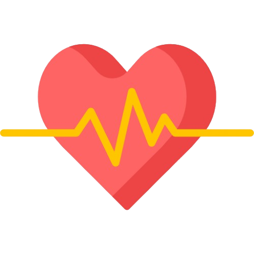

Anxiease: Ovladaj svojim stresom
Živiš s anksioznošću i želiš bolje razumjeti svoje stresatore? AnxiEase ti pruža moćno oruđe za upravljanje stresom i smanjenjem anksioznosti. Stres je čest pratilac modernog života, a njegovi učinci se mogu osjetiti na svim područjima života. Ubrzan puls, otežano disanje i osjećaj nemira su samo neki od simptoma koje može izazvati.
Tvoj mir počinje ovdje
Prati svoje otkucaje srca u realnom vremenu i otkrij kako različite situacije utječu na tvoju anksioznost.
Pronađi obrasce u svojim podacima i otkrij šta te najviše opterećuje.
Razgovaraj sa terapeutom o svojim stresatorima i riješi se neugodnog osjećaja.
Kako koristiti naš uređaj?
Jednostavno postavite prst na senzor i pritisnite dugme za mjerenje. Pratite upute na ekranu kako biste dobili najpreciznije rezultate.

Kliknite na dugme da biste započeli mjerenje.